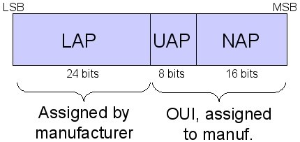

| Q: | What is this all about anyway? |
| A: | As part of an overall goal for assessing risks to Bluetooth devices, we're interested in the common MAC address prefixes that vendors allocate to devices. When a vendor registers and obtains a MAC prefix or organizationally unique identifier, they can use it for anything they like. We're interested in the actual prefixes that are being allocated by vendors in common (and uncommon) Blueetooth devices. |
| Q: | What are the characteristics of
Bluetooth Device Addresses? |
| A: | A Bluetooth Device Address
(BD_ADDR) is a globally unique value assigned to each Bluetooth adapter
by the manufacturer. The BD_ADDR information is made up of
three components:
The format of the BD_ADDR information is shown below. Note that this diagram represents the BD_ADDR information in "Bluetooth Order", with the least-significant bit at the left-most position. 
More information
about Bluetooth networking is available in the Bluetooth Special
Interest Group (SIG) specification documentation at http://www.bluetooth.org.
|
| Q: | Why is this information interesting? |
| A: | The LAP information is allocated uniquely for each Bluetooth device, but the UAP and NAP are part of the Organizationally Unique Identifier (OUI). We're interested in collecting UAP and NAP information to determine what OUI's are being used by vendors for BD_ADDR values. With this information, we can correlate manufacturer information to a specific device, and accelerate Bluetooth device discovery. |
| Q: | Why should I share this information with you? |
| A: | We are independent researchers without commercial funding or alterior motives. We're simply interested in evaluating how vendors are using NAP and UAP information. Since we can only get so far by assessing the devices that we own specifically, we're asking for your help in this effort. If we are able to identify any particularly useful analysis mechanisms from the information we obtain through this community effort, we will share our results openly and publicly to make meaningful improvements to the wireless security and networking industries. |
| Q: | Who is behind this effort? |
| A: |
|
| Q: | Why isn't my entry listed in "The List" yet? |
| A: | For purposes of data validation, we only list entries that have matching OUI's submitted by more than one host. |
| Q: | What's with the Smurf? |
| It's a light take on the Smurf's episode where one Smurf becomes infected with a communicable disease, and turns purple. When purple, the Smurf seeks out to infect other Smurfs (by biting them on the butt) and yells out "GNAP, GNAP" in a torrets-like fashion. It's juvenile, I know. |